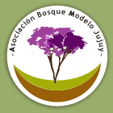
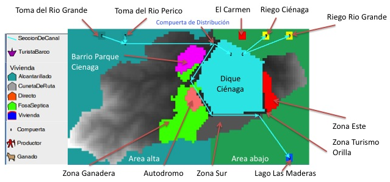
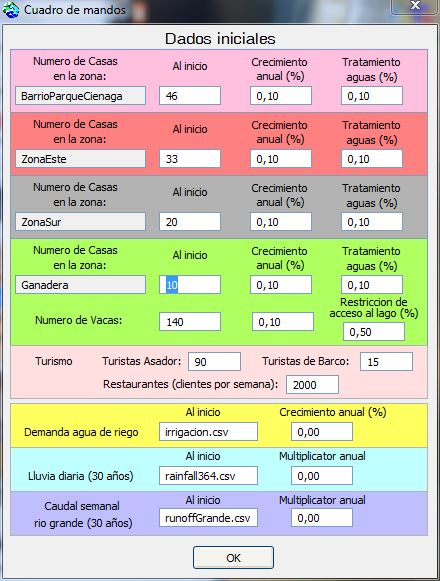
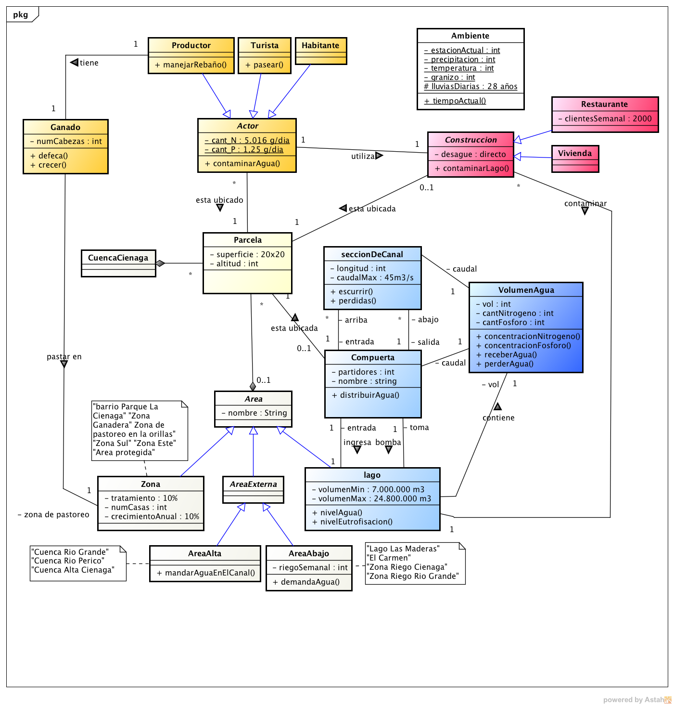
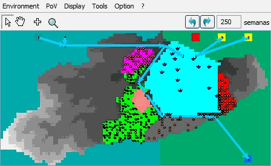
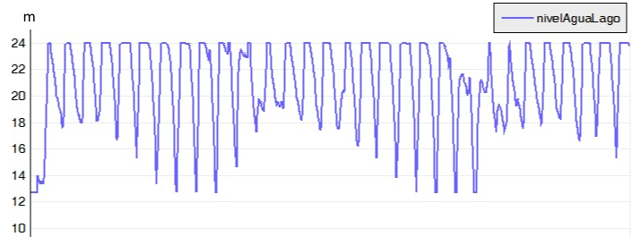
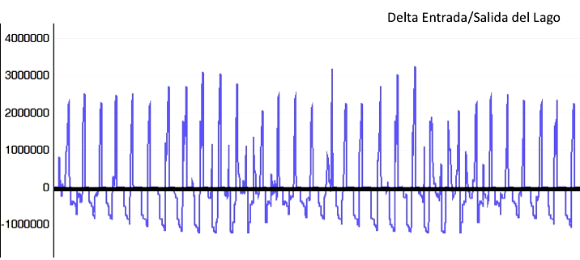
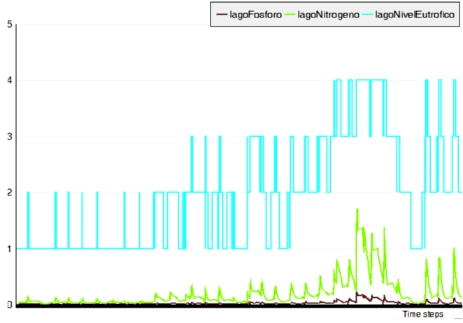

Cienaga
(Page also available in Spanish - Español)Quantity and quality of the Ciénaga dam, Jujuy, Argentina
G. Leclerc (gregoire.leclerc@cirad.fr),
P. Bommel
This hybrid model is developed under the EcoAdapt project EcoAdapt project.
EcoAdapt is an action research project in three territories of Latin America: Argentina, Bolivia and Chile. The project seeks to influence water management processes that contribute to local development and reduce the vulnerability of human populations to climate change, through capacity building, knowledge sharing, prevention and mitigation of conflicts and promoting the work together with local and national stakeholders. It is funded by the 7th Framework Programme for Research and Development of the European Commission.
Motivation
|  |
This model was developed for the case of watersheds of Jujuy (Argentina), one of the three study sites of the project. This area of study is a “Bosque Modelo” (Model Forest): a platform for multi-stakeholder dialogue, based on the concept of sustainable human development, which aims coordinated planning of land management. The Bosque Modelo Jujuy is a civil association that carries out actions and implement projects in order to contribute to the integral management of natural resources in the basin Los Pericos- Manantiales in the province of Jujuy, in northern Argentina. |
The main objective of EcoAdapt is to improve the capacity of
local politicians and scientists to engage in interdisciplinary
action research to enhance their collective capacity to adapt to
climate change communities. The project is based on two premises:
1) the adaptation to climate change is not something that can be
done in an isolated way, and 2) management based on ecosystems is
a solid foundation for a successful adaptation to climate change
in Latin America.
This model focuses on a lake in the area of Jujuy: the Ciénaga dam. It is fed by runoff from the small basin, but also through the water channels from the Rio Grande and the Rio Perico. In contrast, it feeds two agricultural areas where irrigation is practiced. The first challenge is to maintain a satisfactory level of water in the lake to supply the nearby town drinking water and to supply irrigation areas, depending on weather conditions and changes in river flows. The second challenge is to maintain a satisfactory water quality, both to supply the city, but also to maintain aquatic life. This quality also attracts tourists who enjoy the place while contributing to its degradation. Because this place attracts many people that are installed in houses untreated sewage goes directly into the lake.

The start
At the start of a simulation, the user is invited to choose some elements of the initial configuration (number of houses in each area of the basin), and parameters related to the dynamics of the system: annual growth rate and forcing variables (files of 30 years data: precipitation, flow of the Rio Grande and irrigation demand)
Description and characteristics
The following diagram shows the general structure of the model:

The basin is divided into plots of 400 m2 and also in areas and zones. There are 3 types of actors: the producer of cattle, the inhabitants (with annual growth rate depending of the area) and the tourists. Water is represented by the VolumenAgua entity, which contains three attributes: the actual volume, the amount of nitrate and phosphorus. These objects are assigned to various elements of the landscape: the lake, the channel sections and gates distribution. When a VolumenAgua receives or loses water, concentrations are automatically updated.
In the Environment class, the 'lluviasDiarias' attribute contains 30 years of rainfall data of the region serving as foring variable in the simulations.
Implementation
The multi-agent model, developed in the Cormas platform can simulate the short- and long-term water management.The following GIF illustrates some months of simulation:

Below are some of the results of 30 years of simulation:
- Changes in the water level of the lake

- Difference between inlet and outlet water in the lake

- Difference between water supply and water demand in irrigated areas

- Lake Pollution

Twenty trials were performed with different audiences. (to be continued....)
For more information, contact the author.